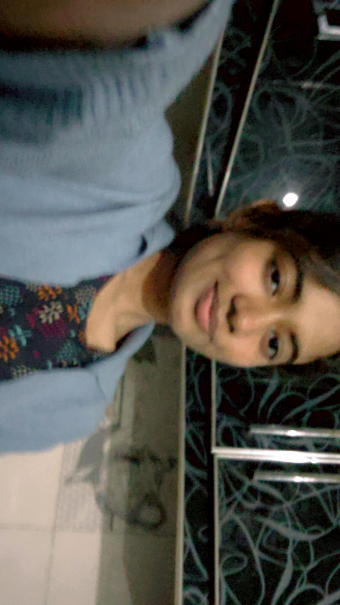

CHAPTER XXIII
For Tehreem
Harooo Tehreeem a happi happi happy birthday to you my girl. MashAllah you have turned 23 today and hundreds more birthdays to come in the future inshaAllah. In a few years hum ye sab sath celebrate karrhe hon gai inshaAllah with handwritten notes 😖 lekin for now I'll try to cover as much as possible in this passage. Kehne ko toh boht kuch hai magar abhi jitna hoskta I will.[cite: 1]
You are the love of my life and the only person ive ever felt so deeply connected to ever, everyday with you feels like a gift in itself and then ap ki funny batein
apki prettiest tareen photos[cite: 1]

Habit Logs // Adoring 01

Habit Logs // Adoring 02
- -apka mujhe adore karna
- -apka mere baray lolmai khyal karna like i am so fragile hajaha apka cutu si batein krke tuff
- -act karna apka mujhe har second miss karna apka mehnat Karna apka aik sath future seek karna
- -apka baat baat par MashAllah inshaAllah kehna namazein parhne apke ghar walay itna kam karatay u still do it without complaining itni hardworking ho sometimes get overwhelmed lekin phir main kab kam aun ga [cite: 1]

Habit Logs // Hardworking

Habit Logs // Caring

Habit Logs // Mommy / Wifu
Sabse pehle toh apke bal omds insert the eid wali photo and the braids wali AAAAAAAAAAAA love them har time mere dimagh mai hotin.[cite: 1]

Meri jaan

Tehrimine
Phir apke eyebrows maigot itne perfect like how can words even describe that.
Apki ankhen toh 😖😖😖😖 doobta hi zata hun main mujhe bacha Len ap, like azkal toh apki itni fine ash ankhen lag rhi hain and u keep blaming it on wtv idc battimzi compliment ni leti.
itni khubsurat cutu si naak h apci dil hi azata hai i don even get why u hate, u look so beautiful with it 🤩🤩🤩
Apciiiio smille this would explain this lwk (insert smile related pics)[cite: 1]

Dilbar janeman
Dil ka totuh

Hazelnut heart throb
this sums up your beautiful fuckin face i can't get enough of.
baki apki body toh itni perfect hot asf hai cant elaborate on that shrm aye gi is messaze mai likhte.[cite: 1]

Baddie gee
Starting from the start in january that valorant game on pearl buahahah, instantly fell in love with how you sounded phir apne sara kam khud karke muzse socials liye and omds ussi time i fell in love with your smile how you look. Since then apse pyar toh barhta hi gaya hai gaya hai downs aye but i kept loving[cite: 1]

Habit Logs // Chaotic 01

Habit Logs // Chaotic 02
Since our makeup, apke sath vc mai bethna, game khelna, anymes dekhna, apko cherna, sab is the best part of my day
When you dragged me into that vc ui hui
When you blush on the one liners and cant say nun
When you make time and fight to just spend some time together
EVERYTHING MEANS A LOT TO ME[cite: 1]

Habit Logs // Adoring 03

Habit Logs // Adoring 04

Habit Logs // Adoring 05
How can I forget about the google meet buahahhaha, my fav video
Jitna sharma rhi thi ap and jitni pyari lag rhi thi
I even was covering up my face shrm sai kiunke itni interaction bhi kbhi nhi hui
Already watched that 100s of times
100s of incidents like these i keep daydreaming about and love so much.[cite: 1]

Sugar plum

Cutu bun

Bbg

Habit Logs // Savage 02

Habit Logs // Savage 03

Habit Logs // Savage 04
You tehreem completely changed my life, my goals, everything
InshaAllah everything im working on and will do in the future will be to give you the best possible life and more than you ever imagined.
I know you keep worrying about how uncertain our future is, but mera pinkie promise hai kai its all my responsibility and i will own up to it. Dont worry one bit bout that, I love you from the bottom of my heart and always will.Havent changed one bit in 16 months and wont ever in the future, will keep loving you to the fullest.
InshaAllah more success to your job career till we ofc get married inshaAllah ASAP then ill spoil the fuh outta you bebe. Bas be supportive just like you already are and Allah pai bharosa rakhna duaen karni everythings worksout in the easiest and fastest way.
More power to you keep shining, stay happy, stay tuff, love you so so so much mwah.[cite: 1]

Zanumanu / Miret

Habit Logs // Savage 05

Habit Logs // Chaotic 03

Habit Logs // Chaotic 04

Habit Logs // Chaotic 05

Habit Logs // Caring 03

Habit Logs // Caring 04

Habit Logs // Caring 05
Its my first time creating a webpage,first time gifting a girl on her birthday, first time doing this much effort for someone, first time loving even.
I know this wont be perfect but its my best and InshaAllah its only uphill from now on[cite: 1]